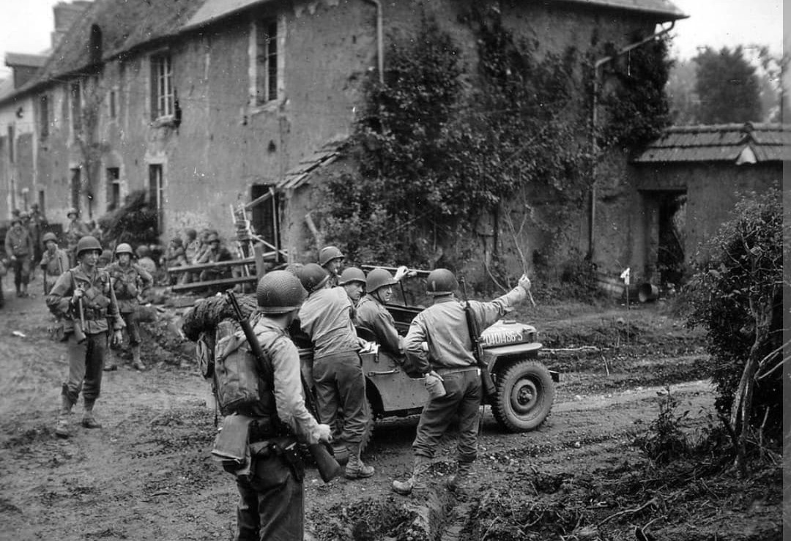
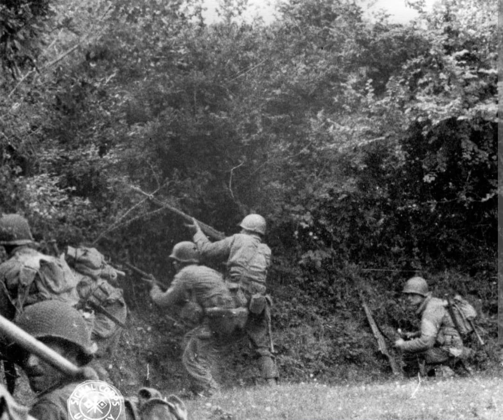

Introduction
Surnommée les « Old Reliables » (les Vieux Confiables) ou encore les « Octofoil » en raison de la forme de leur insigne d'épaule, la **9th Infantry Division** de l'US Army est l'une des divisions d'infanterie américaines les plus aguerries et agiles de la Seconde Guerre mondiale.
Faisant partie des rares unités d'infanterie vétéranes ayant combattu sur deux théâtres d'opérations majeurs (l'Afrique du Nord / Méditerranée puis l'Europe du Nord-Ouest), la 9e Division a accumulé près de 300 jours de combat ininterrompu du débarquement en Algérie en 1942 jusqu'au cœur de l'Allemagne nazie en 1945.
1942–1943 : Le baptême du feu en Afrique du Nord et en Sicile
Activée en août 1940 à Fort Bragg, la division débarque en Afrique du Nord le 8 novembre 1942 dans le cadre de l'**Opération Torch**, touchant le sol à Port-Lyautey au Maroc. Elle s'illustre ensuite lors de la rude campagne de Tunisie, notamment au passe de Kasserine et lors de la capture décisive de Bizerte en mai 1943.
En août 1943, la 9th Infantry prend part à l'**Opération Husky** (l'invasion de la Sicile), perçant les lignes de défense de l'Axe dans le secteur difficile de Troina. Ces victoires méditerranéennes lui valent une solide réputation de ténacité auprès du commandement allié, avant d'être rappelée en Grande-Bretagne pour préparer le débarquement en Europe continentale.

1944 : La Normandie et la capture de Cherbourg
La 9th Infantry Division débarque sur **Utah Beach** le 10 juin 1944 (D+4). Intégrée au VIIe Corps du général Collins, elle est immédiatement engagée dans la coupure du Cotentin pour isoler la presqu'île.
Le 18 juin, la division atteint la côte ouest à Barneville-Carteret, verrouillant définitivement les troupes allemandes situées au nord. Les "Old Reliables" foncent ensuite sur **Cherbourg**, participant de manière décisive à la libération de ce port en eau profonde crucial pour le ravitaillement allié. Elle s'enfonce ensuite dans l'enfer du bocage normand jusqu'à la percée de l'**Opération Cobra**.
Hürtgen, les Ardennes et le pont de Remagen
Après avoir libéré plusieurs villes en France et en Belgique, la division franchit la ligne Siegfried en septembre 1944 et s'enfonce dans la redoutable **forêt de Hürtgen**. Durant des semaines de combats rapprochés sous des tirs d'artillerie décapitant les arbres, la 9e Division subit des pertes effroyables, perdant près de 4 500 hommes pour conquérir quelques kilomètres de bois fortifiés.
Pendant la bataille des Ardennes (décembre 1944), elle tient fermement le secteur nord de Monschau contre les contre-attaques allemandes. En mars 1945, la division s'illustre à nouveau lors de la capture historique du **pont de Ludendorff à Remagen**, établissant et élargissant la tête de pont alliée à l'est du Rhin.

Voir aussi
Page du Musée HOP WW2 – Section Unités Américaines